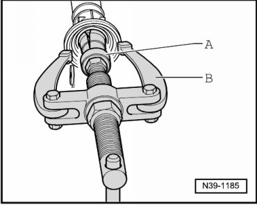
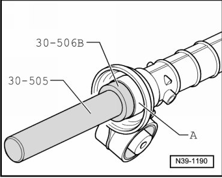

Axle Bearing: Service and Repair
Left Flange Shaft Needle Bearing
Special tools, testers and auxiliary items required
• Mandrel (30 - 505)
• Thrust pad (30 - 506 B)
• Kukko 21/6 Internal puller
• Kukko 22/2 Counter-support
Removing
- Remove front final drive. Refer to --> [ Front Final Drive ] Front Final Drive.
- Remove left flange shaft and seal. Refer to --> [ Left Flange Shaft Seal ] Left Flange Shaft Seal.
- Pull out the left flange shaft needle bearing.

A Internal puller 37 to 46 mm, e.g. Kukko 21/6
B Counter support, e.g. Kukko 22/2
Installing
- Drive in the left flange shaft needle bearing - A - until seated.

- Install left flange shaft and seal. Refer to --> [ Left Flange Shaft Seal ] Left Flange Shaft Seal.
- Install front final drive. Refer to --> [ Front Final Drive ] Front Final Drive.
- Check gear oil in front final drive. Refer to --> [ Gear Oil Checking ] Gear Oil Checking.